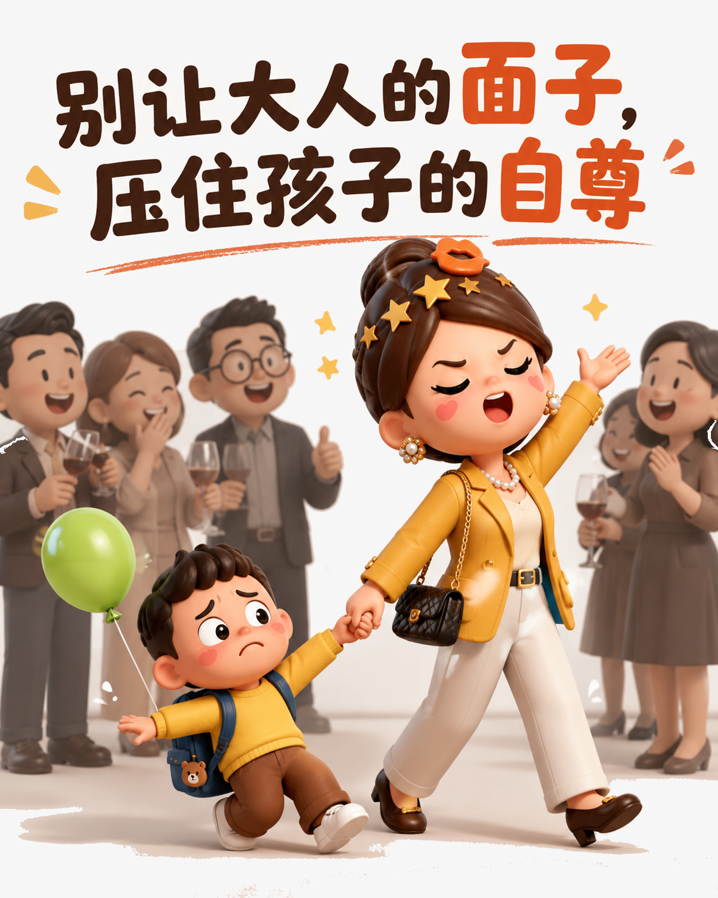
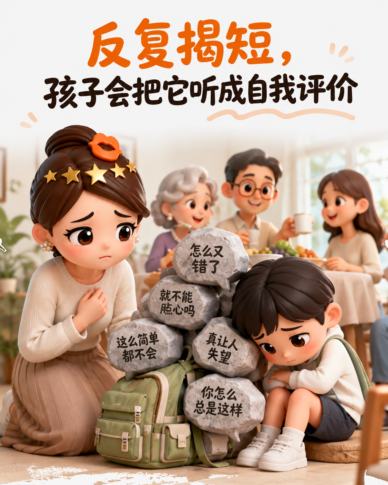
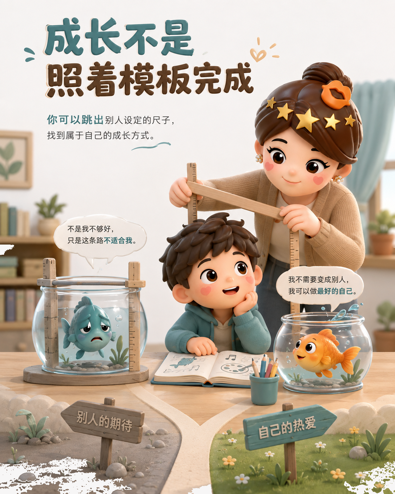
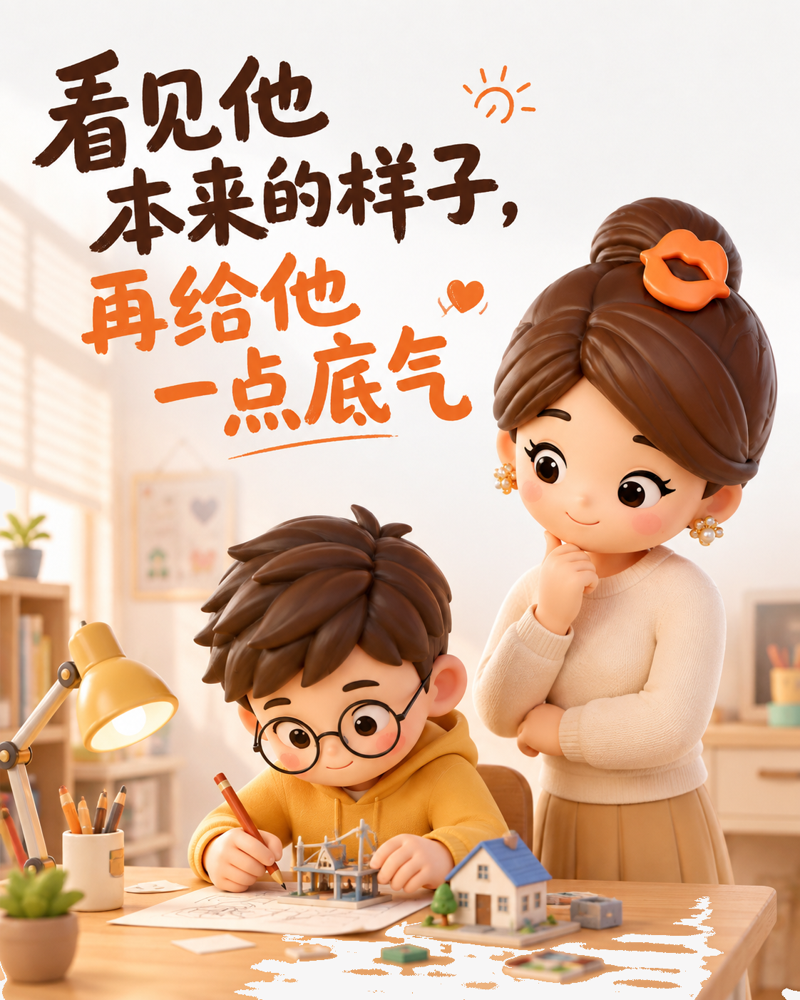

别把孩子的自尊交给大人的面子
别让社交场合替你定义孩子
饭桌上的玩笑，可能只是大人的客气；落到孩子身上，却像一次公开判决。拿他比较、替他谦虚，换来的不是成长，而是失去体面。

孩子会把评价住进心里
父母反复说出的缺点，会变成旁人的印象，也会变成孩子认识自己的起点。听久了，他可能不再尝试，只用一句“我就是不行”替自己下结论。

把成长还给孩子
分数、挫败和不擅长，都需要安静的空间。别急着把孩子塞进模板，允许他试错、绕路，才能找到愿意走的方向。

父母给底气，不给判决
好的养育不是替孩子写答案，而是看见他的样子，在他需要时给一句肯定。少一点评判，多一点信任，孩子才有勇气长成自己。
